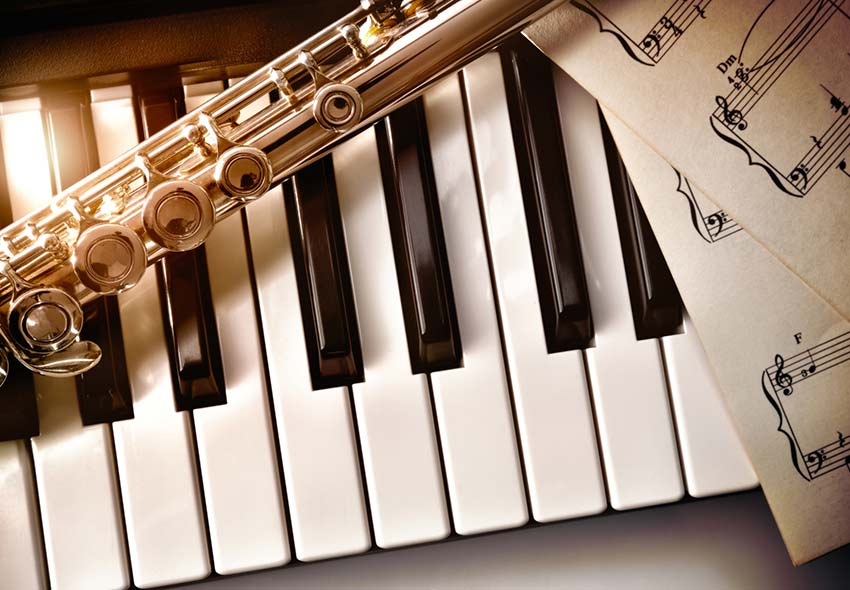
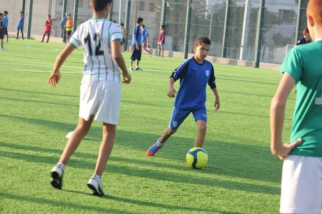
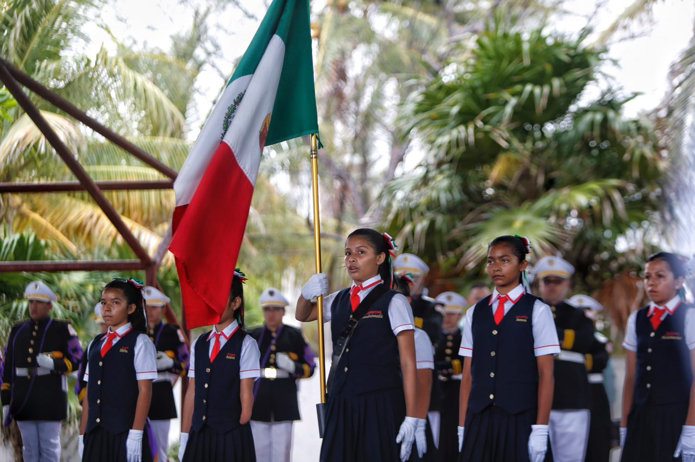
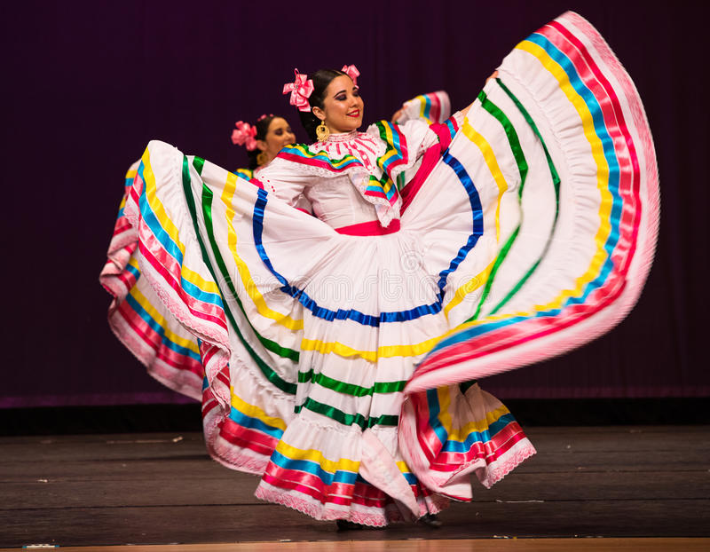

PARAESCOLARES
¡Explora la gran variedad de paraescolares que tenemos!
banda de guerra
El paraescolar de banda de guerra se basa en los instrumentos como los tambores y trompetas para dar himno a la escolta, saludando a la patria con el respeto que se merece

basquetbol
El paraescolar de basquetbol es uno de los mas importantes por su popularidad en cancun donde se presentan a partidos basicos o hasta interbachilleres si eres selectivo, pero lo que le da tanta presencia es su disciplina en todas las actividades

voleybol
El paraescolar de voleybol tambien se le da su importancia por tener popularidad en bachilleres, tienen estrategia y son audaces, al igual que rapidos y son destacados por tener varios trofeos que representan a bachilleres cancun dos
teatro
El paraescolar de es un lugar tranquilo donde demuestras que tan bien te expresas en el arte de las caras y gestos donde te pondras a prueba cada situacion y tu lo tienes que interpretar a tu manera actuando de la manera corrrecta
musica
El paraescolar de musica es uno de los mas tranquilos con un salon chiquito pero tienen mucho talento a la hora de cantar, tocar piano, tocar melodica, tocar violin, tocar saxofon, etc. normalmente hacen eventos aqui en bachilleres sobre talento musical donde hacen conciertos muy interesantes 
futbol
El paraescolar de futbol es un deporte importante y popular de todo bachilleres con un equipo de seleccion para ir a ganar de campeonatos, mostrar respeto al plantel asi como un equipo con disciplina.

escolta
El paraescolar de escolta es una de las mejores actividades durante el homenaje que lleva el honor y patria a nuestro plantel con una firmeza y madurez excelente, solo para valientes.

danza
El paraescolar de danza muestra el folclor de bachilleres, con varios trajes tipicos y estilos de baile que puedes practicar para lucirte en varios en eventos que hace este paraescolar. 